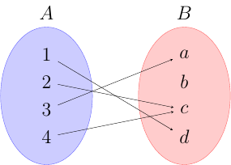
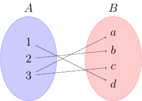

Análisis Matemático
Universidad CEU San Pablo
Definición 1 (Conjunto) Un conjunto es a una colección o agrupación bien definida de objetos que puede considerarse en sí misma otro objeto. Para representar un conjunto se indican sus elementos entre llaves y normalmente se utilizarán letras mayúsculas para referirse a ellos.
Ejemplo 1 Algunos ejemplos de conjuntos son:
Definición 2 (Elementos) Los objetos que componen un conjunto se llaman elementos o miembros del conjunto.
En este curso nos centraremos en los conjuntos numéricos.
Por extenxión: \(A=\{1, 3, 5, 7, 9\}\).
Por comprensión: \(A = \{x : x \mbox{ es un número natural impar menor que 10}\}\).
No todas las definiciones por comprensión son válidas (paradoja del barbero).
Definición 3 (Pertenencia) Si \(a\) es un elemento de un conjunto \(A\), se dice que \(a\) pertenence a \(A\) y se denota \(a\in A\). Por el contrario, si \(a\) no es un elemento del conjunto \(A\), se dice que no pertenece a \(A\) y se denota \(a\not \in A\).
Ejemplo 2 Si \(A\) es el conjunto de los números naturales pares, \(2\in A\), pero \(1\not \in A\).
Definición 4 (Igualdad) Se dice que dos conjuntos \(A\) y \(B\) son iguales, y se denota \(A=B\), si tienen exactamente los mismos elementos. En caso contrario se escribe \(A\neq B\).
Ejemplo 3 \(\{1, 2, 3\} = \{3, 1, 2\}\).
Proposición 1 La igualdad de conjuntos es una relación de equivalencia, es decir, satisface las propiedades:
Definición 5 (Subconjunto) Se dice que un conjunto \(A\) es un subconjunto o está incluído en otro conjunto \(B\), y se denota \(A \subseteq B\), si todos los elementos de \(A\) pertenecen a \(B\), es decir, \[ \forall x \in A, x\in B \]
Cuando \(A\subseteq B\) pero \(A\neq B\) se dice que \(A\) está estríctamente incluido en \(B\) o que \(A\) es un subconjunto propio de \(B\) y se escribe \(A\subsetneq B\).
Ejemplo 4 \(\{1, 2, 3\} \subseteq \{3, 1, 2\}\) y \(\{1, 3\} \subsetneq \{3, 1, 2\}\).
Proposición 2 La inclusión de conjuntos es una relación de orden parcial, es decir, satisface las propiedades:
Definición 6 (Conjunto vacío) El conjunto que no tiene ningún elemento se llama conjunto vacío y se denota \(\emptyset\).
Definición 7 (Unión) Dados dos conjuntos \(A\) y \(B\), se llama unión de \(A\) y \(B\), y se denota \(A\cup B\), al conjunto de todos los elementos que pertenecen al menos a uno de los conjuntos \(A\) y \(B\).
\[A\cup B = \{x\,:\, x\in A\mbox{ o }x\in B\}.\]
Unión de conjuntos
Ejemplo 5 Dado el conjunto de los números que contiene un dado, \(\Omega=\{1,2,3,4,5,6\}\) y sus subconjuntos \(A=\{2,4,6\}\) y \(B=\{1,2,3,4\}\),la unión de \(A\) y \(B\) es \(A\cup B=\{1,2,3,4,6\}\).
Definición 8 (Intersección) Dados dos conjuntos \(A\) y \(B\), se llama intersección de \(A\) y \(B\), y se denota \(A\cap B\), al conjunto de todos los elementos comunes a \(A\) y \(B\).
\[A\cap B = \{x\,:\, x\in A\mbox{ y }x\in B\}.\]
Intersección de conjuntos
Ejemplo 6 Dado el conjunto de los números que contiene un dado, \(\Omega=\{1,2,3,4,5,6\}\) y sus subconjuntos \(A=\{2,4,6\}\) y \(B=\{1,2,3,4\}\),la intersección de \(A\) y \(B\) es \(A\cap B=\{2,4\}\).
Definición 9 (Complemento) Dado un conjunto \(A\subset \Omega\), se llama complemento de \(A\) con respecto a \(\Omega\), y se denota \(\overline A\), al conjunto de todos los elementos de \(\Omega\) que no pertenecen a \(A\).
\[\overline A = \{x\in \Omega\,:\, x\not\in A\}.\]
Complemento de un conjunto
Ejemplo 7 Dado el conjunto de los números que contiene un dado, \(\Omega=\{1,2,3,4,5,6\}\) y sus subconjuntos \(A=\{2,4,6\}\) y \(B=\{1,2,3,4\}\), el contrario de \(A\) con respecto a \(\Omega\) es \(\overline A=\{1,3,5\}\), y el de \(B\) es \(\overline B = \{5, 6\}\).
Definición 10 (Diferencia) Dados dos conjuntos \(A\) y \(B\), se llama diferencia de \(A\) y \(B\), y se denota \(A-B\), al conjunto formado por los elementos de \(A\) que no pertenecen a \(B\), es decir,
\[A-B = \{x\,:\, x\in A\mbox{ y }x\not\in B\}.\]
Diferencia de conjuntos
Ejemplo 8 Dado el conjunto de los números que contiene un dado, \(\Omega=\{1,2,3,4,5,6\}\) y sus subconjuntos \(A=\{2,4,6\}\) y \(B=\{1,2,3,4\}\),la diferencia de \(A\) y \(B\) es \(A-B=\{6\}\), y la diferencia de \(B\) y \(A\) es \(B-A=\{1,3\}\).
Definición 11 (Diferencia simétrica) Dados dos conjuntos \(A\) y \(B\), se llama diferencia simétrica de \(A\) y \(B\), y se denota \(A\triangle B\), al conjunto formado por los elementos que pertenecen a \(A\) o \(B\), pero no a ambos a la vez, es decir,
\[\begin{align*} A\triangle B &= \{x\,:\, x\in A-B\mbox{ o }x\in B-A\}\\ &= (A-B) \cup (B-A) = (A\cup B)-(A\cap B) \end{align*}\]
Diferencia simétrica de conjuntos
Ejemplo 9 Dado el conjunto de los números que contiene un dado, \(\Omega=\{1,2,3,4,5,6\}\) y sus subconjuntos \(A=\{2,4,6\}\) y \(B=\{1,2,3,4\}\),la diferencia simétrica de \(A\) y \(B\) es \(A\triangle B = \{1, 3, 6\}\).
Proposición 3 Dado un conjunto universo \(\Omega\) y los conjuntos \(A,B,C\subseteq \Omega\), se cumplen las siguientes propiedades:
Definición 12 (Conjuntos disjuntos) Dados dos conjuntos \(A\) y \(B\), se dice que son disjuntos si no tienen ningún elemento en común, es decir, \(A\cap B=\emptyset\).
Ejemplo 10 Dado el conjunto de los números que contiene un dado, \(\Omega=\{1,2,3,4,5,6\}\), y sus subconjuntos \(A=\{2,4,6\}\), \(B=\{1,2,3,4\}\) y \(C=\{3, 5\}\), se tiene que \(A\) y \(B\) no son disjuntos ya que \(A\cap B=\{2, 4\}\neq \emptyset\), pero \(A\) y \(C\) son disjuntos pues \(A\cap C=\emptyset\).
Definición 13 (Conjunto potencia) Dado un conjunto \(A\), se llama conjunto potencia o conjunto de las partes de \(A\), y se denota \(\mathcal{P}(A)\), al conjunto de todos los subconjuntos de \(A\), es decir,
\[\mathcal{P}(A) = \{ X \, : \, X \subseteq A \}\]
Ejemplo 11 El conjunto potencia del conjunto \(A=\{1, 2, 3\}\) es \[\mathcal{P}(A)=\{\emptyset, \{1\}, \{2\}, \{3\}, \{1,2\}, \{1,3\}, \{2,3\}, \{1,2,3\}\}\]
Definición 14 (Par ordenado) Dados dos elementos \(a\) y \(b\) se define el par ordenado \((a,b)\) como \[ (a,b) = \{\{a\}, \{a,b\}\} \]
De manera más general, se define una \(n\)-tupla ordenada como \[(a_1, a_2, \ldots, a_n) = ((a_1, a_2, \ldots, a_{n-1}), a_n)\]
Definición 15 (Producto cartesiano) Dados dos conjuntos \(A\) y \(B\), se llama producto cartesiano de \(A\) y \(B\), y se denota \(A\times B\), al conjunto de los pares ordenados
\[A \times B = \{ (a,b) \, : \, a \in A \mbox{ y } b \in B \}\]
De manera más general, si se tienen \(n\) conjuntos \(A_1, A_2, \ldots, A_n\), el producto cartesiano generalizado es
\[A_1 \times A_2 \times \ldots \times A_n = \{ (a_1, \ldots, a_n) \, :\, a_i \in A_i\ \forall i=1, \ldots n\}\]
Ejemplo 12 El producto cartesiano de los conjuntos \(A=\{a, b, c\}\) y \(B=\{1, 2\}\) es
\[ A\times B = \{(a,1), (a,2), (b,1), (b,2), (c,1), (c,2)\} \]
Definición 16 (Relación binaria) Dados dos conjuntos \(A\) y \(B\), se dice que \(R\) es una relación binaria sobre \(A\) y \(B\) si es un subconjunto del producto cartesiano de \(A\) y \(B\), es decir, \[ R \subseteq A \times B. \]
Si \((a,b)\in R\) se escribe \(a R b\).
Si \(A\) y \(B\) son el mismo conjunto, se dice que \(R\) es una relación binaria homogénea.
Dependiendo de las propiedades que cumpla una relación binaria homogénea tenemos los siguientes tipos de relaciones:
Definición 17 (Relación de equivalencia) Dado un conjunto \(A\) y una relación homogénea \(\sim \subseteq A \times A\), se dice que \(\sim\) es una relación de equivalencia si es que cumple que \(\sim\) es reflexiva, simétrica y transitiva, es decir, si cumple las propiedades
Ejemplo 13 Ya hemos visto que la relación de igualdad matemática entre los elementos de un conjunto es una relación de equivalencia.
Definición 18 (Relación de orden) Dado un conjunto \(A\) y una relación homogénea \(\preceq \subseteq A \times A\), se dice que \(\preceq\) es una relación de orden, si es una relación reflexiva, antisimétrica y transitiva, es decir, si cumple las propiedades
Definición 19 (Relación de orden parcial) Dado un conjunto \(A\) y una relación homogénea \(\preceq \subseteq A \times A\), se dice que \(\preceq\) es una relación de orden parcial, si es una relación de orden y al menos dos elementos de \(A\) están relacionados mediante \(\preceq\), es decir,
\[\exists x, y\in A,\ x\preceq y \mbox{ o } y\preceq x.\]
Al conjunto \(A\) con la relación de orden parcial \(\preceq\) se le llama conjunto parcialmente ordenado, y se denota \((A,\preceq)\).
Ejemplo 14 El conjunto potencia de un conjunto \(A\) con la relación de inclusión es un conjunto parcialmente ordenado \((\mathcal{P}(A),\subseteq)\).
Definición 20 (Relación de orden total) Dado un conjunto \(A\) y una relación homogénea \(\preceq \subseteq A \times A\), se dice que \(\preceq\) es una relación de orden total, si es una relación de orden y todos los elementos de \(A\) se relacionan entre sí mediante \(\preceq\), es decir,
\[\forall x, y\in A,\ x\preceq y \mbox{ o } y \preceq x.\]
Al conjunto \(A\) con la relación de orden total \(\preceq\) se le llama conjunto totalmente ordenado, y se denota \((A,\preceq)\).
Ejemplo 15 La relación de orden de los números naturales \((\mathbb{N},\leq)\) es un orden totalmente ordenado. Sin embargo, la relación de inclusión en el conjunto potencia de un conjunto \(A\) (\(\mathcal{P}(A),\subseteq\)) no es un orden totalmente ordenado, ya que dados dos elementos \(a\neq b\) de \(A\), se cumple que \(\{a\}\subsetneq \{b\}\) y \(\{b\}\subsetneq \{a\}\).
Definición 21 (Cota superior) Dado un subconjunto con una relación de orden parcial \((A,\preceq)\) y un subconjunto \(B\subseteq A\), se dice que un elemento \(c\in A\) es una cota superior de \(B\), si todos los elementos de \(B\) son menores o iguales a \(c\) según la relación de orden, es decir,
\[\forall x \in B, x\preceq c.\]
El conjunto de todas las cotas superiores de \(B\) se denota \(\operatorname{CS}(B)\).
Ejemplo 16 Para el conjunto \(B=\{3, 4, 5\}\subseteq \mathbb{N}\), \(5\) es una cota superior. El conjunto de todas sus cotas superiores es \(\operatorname{CS}(B)=\{x\in \mathbb{N}:x\geq 5\}\).
Para el intervalo \([0,1)\subseteq \mathbb{R}\), cualquier número real \(x\geq 1\) es una cota superior, por lo que \(\operatorname{CS}([0,1)) = \{x\in \mathbb{R}:x\geq 1\}\).
Definición 22 (Cota inferior) Dado un subconjunto con una relación de orden parcial \((A,\preceq)\) y un subconjunto \(B\subseteq A\), se dice que un elemento \(c\in A\) es una cota inferior de \(B\), si todos los elementos de \(B\) son mayores o iguales a \(c\) según la relación de orden, es decir,
\[\forall x \in B, c\preceq x.\]
El conjunto de todas las cotas inferiores de \(B\) se denota \(\operatorname{CI}(B)\).
Ejemplo 17 El conjunto de las cotas inferiores de \(B=\{3, 4, 5\}\subseteq \mathbb{N}\) es \(\operatorname{CI}(B)=\{1, 2, 3\}\).
El conjunto de las cotas inferiores de \([0,1)\subseteq \mathbb{R}\) es \(\operatorname{CI}([0,1)) = \{x\in \mathbb{R}:x\leq 0\}\).
Definición 23 (Máximo) Dado un conjunto con una relación de orden parcial \((A,\preceq)\), se dice que un elemento \(m\in A\) es un máximo de \(A\), y se denota \(\max(A)\), si cualquier otro elemento de \(A\) es menor o igual que él según la relación de orden, es decir,
\[\forall x \in A, x\preceq m.\]
Ejemplo 18 El máximo de \(B=\{3, 4, 5\}\subseteq \mathbb{N}\), es \(5\).
El intervalo \([0,1)\subseteq \mathbb{R}\) no tiene máximo.
Definición 24 (Mínimo) Dado un conjunto con una relación de orden parcial \((A,\preceq)\), se dice que un elemento \(m\in A\) es un mínimo de \(A\), y se denota \(\min(A)\), si y cualquier otro elemento de \(A\) es mayor o igual que él según la relación de orden, es decir,
\[\forall x \in A, m\preceq x.\]
Ejemplo 19 El mínimo de \(B=\{3, 4, 5\}\subseteq \mathbb{N}\), es \(3\).
El mínimo del intervalo \([0,1)\subseteq \mathbb{R}\) es \(0\).
Teorema 1 (Unicidad de los extremos) Dado un conjunto con una relación de orden parcial \((A,\preceq)\), si existe el máximo de \(A\) entonces es único. Lo mismo es cierto para el mínimo.
Definición 25 (Supremo) Dado un subconjunto con una relación de orden parcial \((A,\preceq)\) y un subconjunto \(B\subseteq A\), se llama supremo de \(B\), y se denota \(\sup(B)\), a la menor de las cotas superiores de \(B\).
Ejemplo 20 El supremo del conjunto \(B=\{3, 4, 5\}\subseteq \mathbb{N}\), es \(5\) ya que es el mínimo del conjunto de sus cotas superiores \(\operatorname{CS}(B)=\{x\in \mathbb{N}:x\geq 5\}\).
El supremo del intervalo \([0,1)\subseteq \mathbb{R}\) es \(1\) ya que es el mínimo del conjunto de sus cotas superiores \(\operatorname{CS}([0,1) = \{x\in \mathbb{R}:x\geq 1\}\).
Definición 26 (Ínfimo) Dado un subconjunto con una relación de orden parcial \((A,\preceq)\) y un subconjunto \(B\subseteq A\), se llama ínfimo de \(B\), y se denota \(\inf(B)\), a la mayor de las cotas inferiores de \(B\).
Ejemplo 21 El ínfimo del conjunto \(B=\{3, 4, 5\}\subseteq \mathbb{N}\), es \(3\) ya que es el máximo del conjunto de sus cotas inferiores \(\operatorname{CI}(B)=\{1, 2, 3\}\).
El ínfimo del intervalo \([0,1)\subseteq \mathbb{R}\) es \(0\) ya que es el máximo del conjunto de sus cotas inferiores \(\operatorname{CI}([0,1)) = \{x\in \mathbb{R}:x\leq 0\}\).
Un conjunto puede no tener cotas superiores o inferiores y, por tanto, no tener supremo o ínfimo.
Ejemplo 22 El conjunto \(B=\{x\in\mathbb{Z}: x \mbox{ es par}\}\), no tiene cotas superiores, ni inferiores, y por tanto tampoco tiene máximo, mínimo, supremo e ínfimo.
Definición 27 (Función) Se dice que una relación binaria \(f \subseteq A \times B\), con \(A\) y \(B\) conjuntos no vacíos, es una función o aplicación, y se denota \(f:A\rightarrow B\), si \(f\) no contiene dos pares ordenados distintos con la misma primera componente, es decir,
\[\forall a \in A, \forall b_1, b_2 \in B, \mbox{ si } (a,b_1) \in f \mbox{ y } (a,b_2) \in f, \mbox{ entonces } b_1 = b_2.\]
Es habitual representar los pares de una función con la notación \(y=f(x)\) donde \(x\) es la primera componente del par e \(y\) la segunda.
Ejemplo 23 La relación binaria \(f=\{(1,a), (2,c), (3,c), (4,b)\}\) es una función, pero la relación \(g=\{(1,a), (2,c), (3,c), (2,b)\}\) no lo es porque existen dos pares cuya primera componente es \(2\).
Del mismo modo la función raíz cuadrada \(y=f(x)=\sqrt{x}\) no es una función en el conjunto de los números reales, ya que, por ejemplo \(\sqrt{1}=\pm 1\).


Definición 28 (Dominio) Dada una función \(f:A\rightarrow B\), se llama dominio de \(f\), y se denota \(\operatorname{Dom}(f)\) al conjunto de las primeras componentes de los pares de \(f\), es decir,
\[\operatorname{Dom}(f) = \{a\in A: \exists b\in B, (a,b)\in f\}\]
Definición 29 (Imagen) Dada una función \(f:A\rightarrow B\), se llama imagen de \(f\), y se denota \(\operatorname{Im}(f)\) al conjunto de las segundas componentes de los pares de \(f\), es decir,
\[\operatorname{Im}(f) = \{b\in B: \exists a\in A, (a,b)\in f\}\]
Definición 30 (Función inyectiva) Dada una función \(f:A\rightarrow B\), se dice que \(f\) es inyectiva si no existen dos elementos de \(A\) con la misma imagen, es decir,
\[\forall a_1, a_2 \in A, \mbox{ si } f(a_1) = f(a_2), \mbox{ entonces } a_1 = a_2.\]
Función inyectiva y no sobreyectiva
Definición 31 (Función sobreyectiva) Dada una función \(f:A\rightarrow B\), se dice que \(f\) es sobreyectiva si todo elemento de \(B\) tiene una preimagen (está relacionado con algún elemento de \(A\) mediante \(f\)), es decir,
\[\forall b \in B, \exists a\in A, f(a) = b.\]
Función sobreyectiva y no inyectiva
Definición 32 (Función biyectiva) Dada una función \(f:A\rightarrow B\), se dice que \(f\) es biyectiva, si \(f\) es, a la vez, inyectiva y sobreyectiva.
Función biyectiva
Función no inyectiva y no sobreyectiva
Definición 33 (Función identidad) Dado un conjunto \(A\), se llama función identidad de \(A\), y se denota \(\operatorname{id}_A:A\rightarrow A\), a la función que empareja cada elemento de \(A\) consigo mismo, es decir,
\[\operatorname{id}_A (a) = a, \forall a\in A.\]
Definición 34 (Función inversa) Dada una función \(f:A\rightarrow B\), se llama función inversa de \(f\), y se denota \(f^{-1}:B\rightarrow A\), a la función que resulta de revertir el orden de los pares de \(f\), es decir,
\[f^{-1} = \{ (b,a) : (a,b) \in f \}.\]
Para que exista la función inversa de \(f\), \(f\) debe ser inyectiva.
Definición 35 (Composición de funciones) Dadas dos funciones \(f:A\rightarrow B\) y \(g:C\rightarrow D\), tales que \(\operatorname{Im}(f)\subseteq \operatorname{Dom}(g)\), se llama composición de \(f\) con \(g\), y se denota \(g\circ f:A\rightarrow D\), a la funcion que a cada elemento del dominio de \(A\) le asocia el elemento que resulta de aplicar \(g\) a la imagen de \(a\) mediante \(f\), es decir,
\[g\circ f(a) = g(f(a)), \forall a\in A.\]
Proposición 4 Dada una función \(f:A\rightarrow B\), si existe \(f^{-1}\), entonces \(f\circ f^{-1} = \operatorname{id}_A\) y \(f^{-1}\circ f = \operatorname{id}_B\).
Definición 36 (Cardinal) Dado un conjunto \(A\), se llama cardinal de \(A\), y se denota \(|A|\), al número de elementos de \(A\).
Ejemplo 24 El cardinal del conjunto \(A=\{a, b, c\}\) es \(|A|=3\).
Proposición 5 El cardinal del conjunto potencia de un conjunto \(A\) es \(|\mathcal{P}(A)| = 2^{|A|}\).
Definición 37 (Conjuntos equipotentes) Se dice que dos conjuntos \(A\) y \(B\) son equipotentes, y se denota \(A\approx B\), si tienen la misma cantidad de elementos, es decir, si \(|A| = |B|\).
Proposición 6 Dos conjuntos \(A\) y \(B\) son equipotentes si y solo si cada elemento de \(A\) puede emparejarse con uno de \(B\), de manera que todos los elementos de \(B\) sean pareja de uno de \(A\) y solo de uno, es decir, existe una aplicación biyectiva \(f:A\rightarrow B\).
Proposición 7 La relación de equipotencia es una relación de equivalencia, es decir, satisface las siguientes propiedades:
Definición 38 (Conjunto minuspotente) Dados dos conjuntos \(A\) y \(B\), se dice que \(A\) es minuspotente a \(B\), y se denota \(A\preceq B\), si el cardinal de \(A\) es menor o igual que el de \(B\), es decir, si \(|A| \leq |B|\).
Proposición 8 El conjunto \(A\) es minuspotente al conjunto \(B\) si y solo si existe una aplicación inyectiva \(f:A\rightarrow B\).
Proposición 9 La relación de minuspotencia es una relación de orden, es decir, satisface las siguientes propiedades:
Definición 39 (Conjunto finito) Se dice que un conjunto \(A\) es finito si es que existe un \(n\in\mathbb{N}\) tal que \(|A| = |\{1,2,3,\ldots,n \}|\). Cuando esto ocurre, el cardinal de \(A\) es \(|A|=n\).
Ejemplo 25 El conjunto \(A=\{a, b, c\}\) es finito ya que puede definirse una aplicación biyectiva \(f:A\rightarrow \{1, 2, 3\}\) con los pares \(\{(1,a),(2,b), (3,c)\}\), y por tanto, \(|A| = 3\).
Definición 40 (Conjunto infinito) Se dice que un conjunto \(A\) es infinito si no es finito. En tal caso su cardinal se denota \(|A|=\infty\).
Hay que dejar claro que el símbolo \(\infty\) es una notación de conveniencia y no representa a ningún número.
Ejemplo 26 El conjunto de los números naturales \(\mathbb{N}\) es infinito, ya que no puede ponerse en correspondencia biyectiva con ningún conjunto \(\{1,2,\ldots,n\}\) para ningún \(n\in\mathbb{N}\), y por tanto, \(|\mathbb{N}|=\infty\).
¿Dos conjuntos infinitos son siempre del mismo tamaño?
Ejemplo 27 El conjunto de los números naturales pares \(P\) es infinito y también lo es el conjunto de los números naturales \(\mathbb{N}\). Además ambos son equipotentes pues se puede definir una aplicación biyectiva \(f(n) = 2n\) \(\forall n\in\mathbb{N}\), de manera que \(\mathbb{N}\approx P\).
Sin embargo, el conjunto de los números naturales \(\mathbb{N}\) no es equipotente al conjunto de los números reales \(\mathbb{R}\), sino minuspotente.
Existen conjuntos infinitos de distintos tamaños.
Definición 41 (Conjunto numerable) Se dice que un conjunto \(A\) es numerable si tiene el mismo cardinal que el conjunto de los números naturales \(\mathbb{N}\).
Corolario 1 Un conjunto \(A\) es numerable si existe una aplicación biyectiva \(f:\mathbb{N}\rightarrow A\).
Ejemplo 28 El conjunto de los números pares es equipotente al conjunto de los números naturales, y por consiguiente, es numerable.
El conjunto de los números enteros \(\mathbb{Z}\) también es numerable, pues se puede definir una aplicación biyectiva \(f:\mathbb{N}\rightarrow \mathbb{Z}\) de la siguiente manera
\(f(n)= \begin{cases} (n-1)/2 &\mbox{si } n\in \mathbb{N} \mbox{ es impar},\\ -n/2 &\mbox{si } n\in \mathbb{N} \mbox{ es par}. \end{cases}\)
Sin embargo, existen conjuntos infinitos que no son numerables, como por ejemplo el conjunto de los números reales \(\mathbb{R}\).
David Hilbert, propuso una interesante paradoja para probar este hecho, conocida como la paradoja del hotel infinito
Teorema 2 (Cantor) El conjunto potencia de cualquier conjunto \(A\) tiene un cardinal estrictamente mayor que el cardinal de \(A\), es decir, \(|A| < |\mathcal{P}(A)|\).
Teorema 3 (Cardinalidad del continuo) El conjunto de los números reales \(\mathbb{R}\) tiene un cardinal igual al del conjunto potencia del conjunto de los números naturales \(\mathcal{P}(\mathbb{N})\), es decir, \(|\mathbb{R}|=2^{|\mathbb{N}|}\).